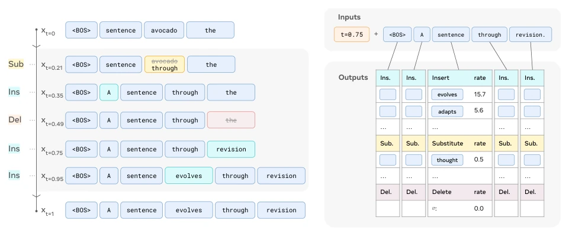
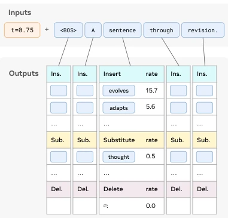
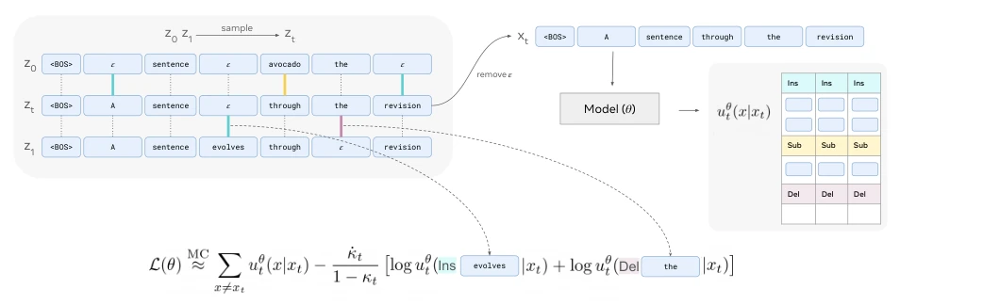
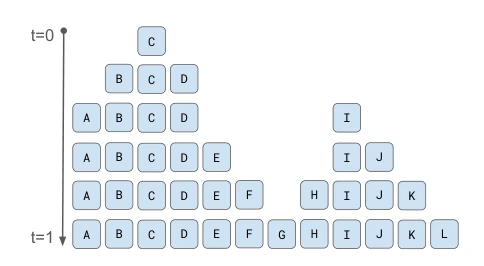
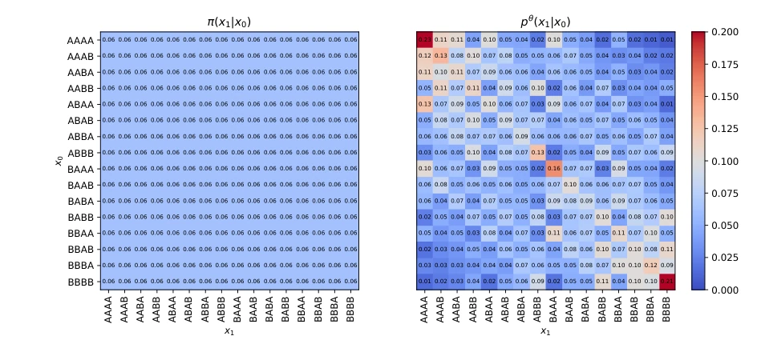
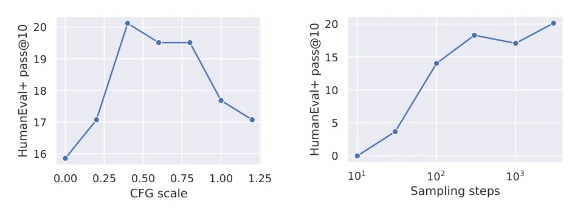
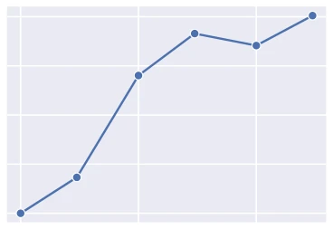
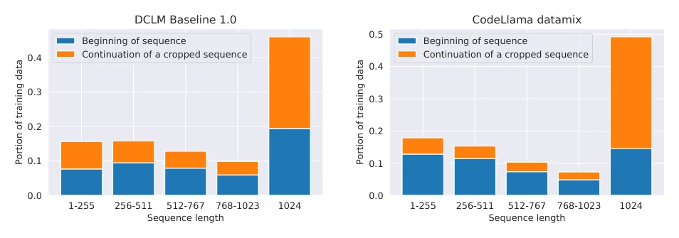
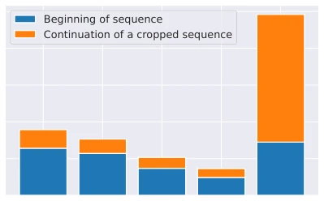

Meta FAIR's Edit Flows attempts to address the "rigidity" problem of non-autoregressive models in sequence generation. It no longer relies on fixed token position masks, but constructs discrete flows through three editing operations: insertion, deletion, and substitution. This sounds compelling, as it can adaptively vary length, but actual performance is mixed. On image captioning tasks it significantly outperforms autoregressive models, code generation even dominates Mask DFM (relative improvement 138%), but on open text benchmarks it still slightly lags behind Llama3 autoregressive baseline. The training process introduces auxiliary variables, although theoretically elegant, the computational overhead is substantial. Overall, this is an important advancement in the field of discrete flow matching, proving that editing operations are more flexible than masks, but still falls short of a "universal replacement", and is sensitive to pretraining data, failing to completely escape the shadow of autoregressive models.
研究动机Motivation
现有非自回归模型（如 Mask DFM, Gat et al., 2024）依赖刚性因子化表示，无法动态增减 token，限制了序列建模能力。自回归模型虽强但生成慢。现有编辑模型（如 Levenshtein Transformer, Gu et al., 2019b）多为启发式或串行，难以采样目标分布。Edit Flows 旨在利用连续时间马尔可夫链（CTMC）直接在序列空间建模，通过编辑操作实现并行且变长的生成，克服 Mask 构造的局限（Campbell et al., 2024b）。Mask 方法需填充 token，导致模型对填充过度自信，而 Edit Flows 无需 padding，更贴合真实序列结构。此外，现有非自回归模型常依赖启发式半自回归采样（Nie et al., 2025），缺乏理论保证，Edit Flows 试图通过 Flow Matching 提供严格的概率路径。
Existing non-autoregressive models (such as Mask DFM, Gat et al., 2024) rely on rigid factorized representations, unable to dynamically add or remove tokens, limiting sequence modeling capabilities. Although autoregressive models are strong, generation is slow. Existing edit models (such as Levenshtein Transformer, Gu et al., 2019b) are mostly heuristic or serial, making it difficult to sample the target distribution. Edit Flows aims to utilize continuous-time Markov chains (CTMC) to model directly in sequence space, achieving parallel and variable-length generation through editing operations, overcoming the limitations of Mask construction (Campbell et al., 2024b). Mask methods require padding tokens, leading to model overconfidence on padding, while Edit Flows requires no padding, fitting real sequence structures better. Furthermore, existing non-autoregressive models often rely on heuristic semi-autoregressive sampling (Nie et al., 2025), lacking theoretical guarantees; Edit Flows attempts to provide strict probability paths through Flow Matching.
The core is defining CTMC on sequence space, state transitions are driven by editing operations (Ins/Del/Sub). The model predicts edit rates for each position, parameterized by total rate lambda and conditional distribution Q. The training difficulty lies in the infeasibility of directly optimizing sequence-level stochastic processes, therefore auxiliary alignment variables are introduced (Theorem 3.1), transforming the problem into Flow Matching on augmented space. The loss function includes the negative sum of edit rates and cross-entropy of remaining edits, obtaining a solvable objective through sampling auxiliary variables. During sampling, CTMC iterative updates are simulated. Additionally, Localized Edit Flow is proposed, encouraging adjacent tokens to generate continuously, improving long sequence performance, benefiting significantly in code generation. This method avoids the non-scalability of token-wise paths, achieving true sequence-level flow matching.

Figure 1 Edit Flow sampling process. Starting with x0 containing random tokens or an empty sequence, the model applies edits to xt and reaches a cohesive sentence at time t = 1.

Figure 2 Edit Flow model inputs and outputs. Given xt, the model predicts the rate of each possible edit.

Figure 3 Computing the loss starts with the two aligned sequences z0 and z1. Locations where zi 0 = ε require an insertion operation, locations where zi 1 = ε require a deletion and locations where zi 0 ̸= zi 1 require a substitution. zt is sampled by applying a subset of the operations to z0 depending on the scheduler. Then, xt is obtained by removing all ε tokens from zt. The Monte-Carlo estimate of the loss contains the model output uθ t (x|xt) in two terms: the negated sum of all the edit rates and the logarithms of the remaining edits between zt and z1.

Figure 8 Illustration of the localized generation path. Tokens that are neighboring to existing tokens have a much higher likelihood of getting inserted next. Tokens that are not next to already inserted tokens (e.g. token I) have a small, but non-zero likelihood of getting inserted in the current timestep.

Figure 14 Comparison of the training time coupling (π(x1|x0)) with the coupling learned by the edit flow (pθ(x1|x0)). The model prioritizes pairings that require few edits.
Using Llama3 280M/1.3B models, tested on MS COCO, DCLM, and CodeLlama datasets. Baselines include autoregressive Llama3 and Mask DFM. Metrics cover CIDEr, Pass@1, etc. Results show that in image captioning tasks Edit Flow is better than AR; in code generation, Localized Edit Flow on MBPP Pass@1 relative to Mask DFM improved by 138%. Text benchmarks are slightly lower than AR. Limitations lie in pretraining configuration biased towards AR, and text evaluation relies on ELBO estimation. Data distribution analysis shows training data length has a significant impact on model performance. On HumanEval, Edit Flow also showed potential better than Mask DFM, proving its adaptability in complex logic tasks.
Figure 5 Example input images and the stochastic sequential generation of captions from an Edit Flows model.

Figure 11 Effect of CFG scale at sampling time on the code generation benchmark using the 1.3B parameter Edit Flow model.

Figure 12 Effect of the number of sampling steps on the code generation benchmark using the 1.3B parameter Edit Flow model.

Figure 9 54% of the training data consists of sequences of length < 1024 and 57% of these are self contained sequences (meaning that they start with a <BOS> token and have < 1024 tokens in total).

Figure 10 50% of the training data consists of sequences of length < 1024 and 72% of these are self contained sequences (meaning that they start with a <BOS> token and have < 1024 tokens in total).